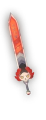
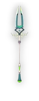
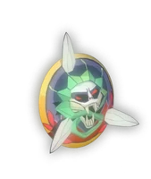
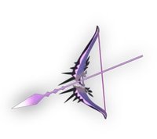
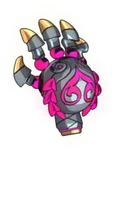
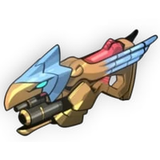

Dalam Hades terdapat enam jenis senjata yang dapat dimainkan yang berupa pedang, tombak, busur, tameng, senapan, dan tinju yang masing-masing memiliki aspek atau versi yang berbeda-beda.
Mengenai aspek senjata:
Aspek senjata dalam Hades merujuk pada wujud lain dari suatu senjata yang berdasarkan mitologi. Pergantian aspek senjata akan mengubah tampilan, gaya bermain dan skill yang dimiliki oleh suatu senjata.
informasi lebih lanjut dapat dilihat pada informasi terkait senjata dibawah.
Stygius
Kondisi membuka: Terbuka secara default
pemilik sebelumnya: Poseidon
Aspek senjata:
- Zagreus
- Nemesis
- Poseidon
- Arthur

Varatha
Kondisi membuka: Gunakan empat kunci
pemilik sebelumnya: Hades
Aspek senjata:
- Zagreus
- Achilles
- Hades
- Guan Yu

Varatha
Kondisi membuka: Gunakan tiga kunci
pemilik sebelumnya: Zeus
Aspek senjata:
- Zagreus
- Chaos
- Zeus/li>
- Beowulf

Coronacht
Kondisi membuka: Gunakan satu kunci
pemilik sebelumnya: Hera
Aspek senjata:
- Zagreus
- Chiron
- Hera
- Rama

Malphon
Kondisi membuka: Gunakan 8 kunci dan buka empat senjata pertama lebih dahulu
pemilik sebelumnya: Demeter
Aspek senjata:
- Zagreus
- Talos
- Demeter
- Gilgamesh

Exagryph
Kondisi membuka: Gunakan delapan kunci dan buka semua senjata lain terlebih dahulu
pemilik sebelumnya: Hestia
Aspek senjata:
- Zagreus
- Eris
- Hestia
- Lucifer